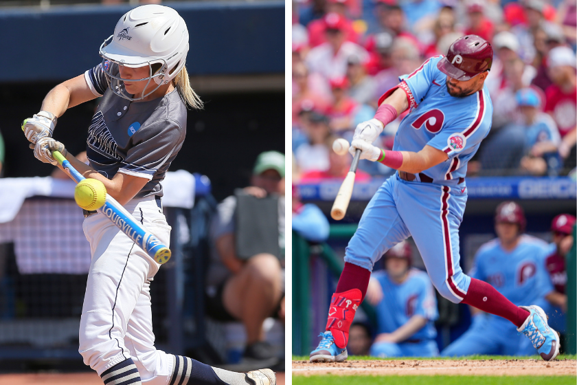

My name is Ava Pargal, and I am a sophomore at Canyon Crest Academy. I am 16 years old, and my birthday is January 21st, 2010. Both of my parents are from Iran, making me almost completely Persian. Although I have never been to Iran, I love my culture and hope to visit one day. I was born in Houston, Texas, along with my older brother. He is a senior attending the same high school as me. We moved from Texas when I was almost two years old and have lived in San Diego ever since.
Ever since I was a child, I have had a love for music. I took after my brother in learning piano at a very young age. I’ve been playing for close to 13 years and still love it. I love challenging myself with the songs I learn, but over a year ago, I decided to expand my instruments and learn to play the guitar. Music has always been such a big part of my life, whether I’m just listening to it or playing it. My favorite song is Wildflower by Billie Eilish. I have helped friends write songs or learn how to play piano. Piano is a very complicated insytument and there have been many times I wanted to quit playing, but I always go right back to it a few days later because I think the ability to play is such a gift and talent that I wouldn’t want to waste.
As a younger sibling, I’ve always wanted to follow in my brother's footsteps. As I already talked about, I took after my brother in learning piano, but that wasn’t the only thing. My brother was a big fan of sports, mainly baseball, and as a younger sister, I wanted to play with him. That was the start of my softball career. Although we never got to practice together, it was something both of us shared. He would help coach me as the games progressed, and it was always nice to have an older brother looking after me.
